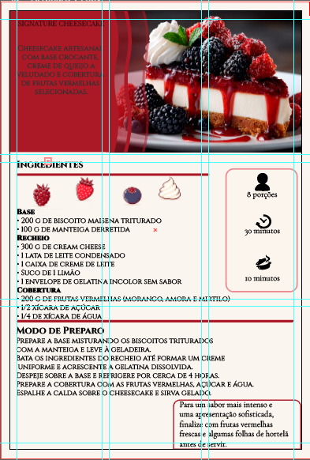

Abaixo está documentado todo o processo de planejamento visual e estruturação da peça gráfica desenvolvida.
O layout foi estruturado simulando a página de um menu impresso tradicional. Utilizou-se uma malha editorial rigorosa para equilibrar a área de texto com o peso visual da fotografia da sobremesa, aplicando as leis de proximidade da Gestalt para separar ingredientes e modo de preparo.

Para o título principal da sobremesa, foi utilizada a fonte Playfair Display, que traz contraste e refinamento. O bloco descritivo e o passo a passo foram diagramados com a Cormorant Garamond Light, garantindo legibilidade e a sobriedade típica de cardápios de alta gastronomia.